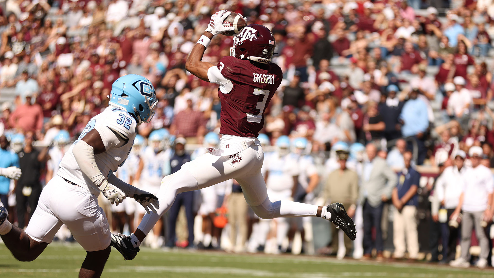
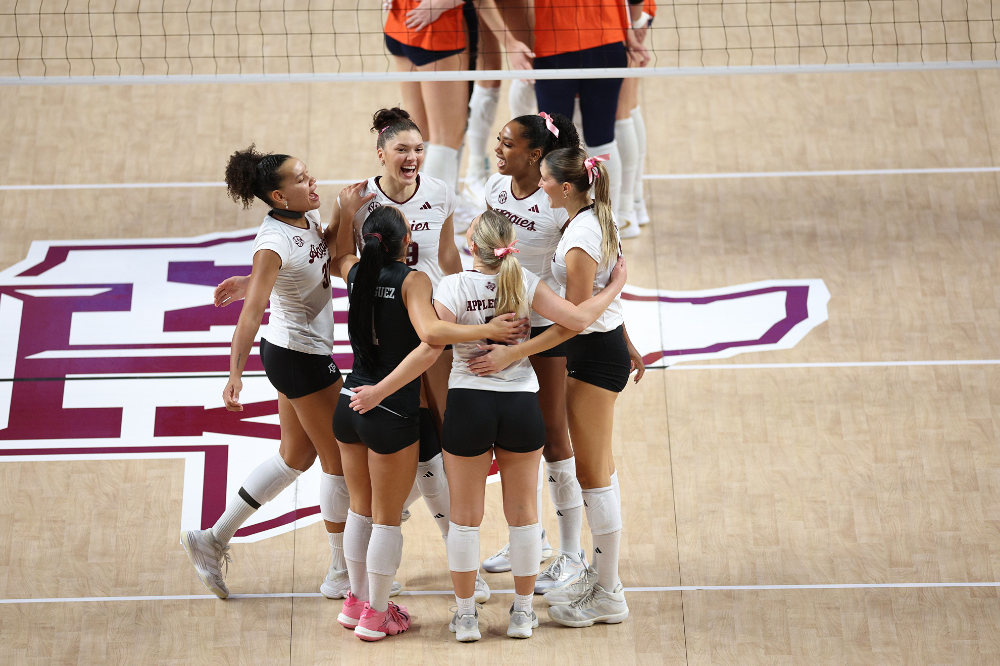
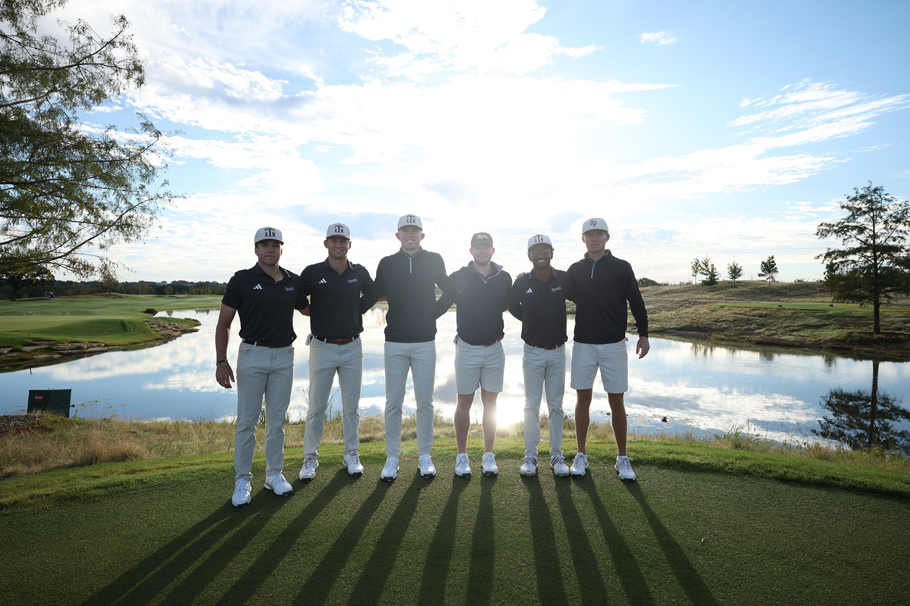
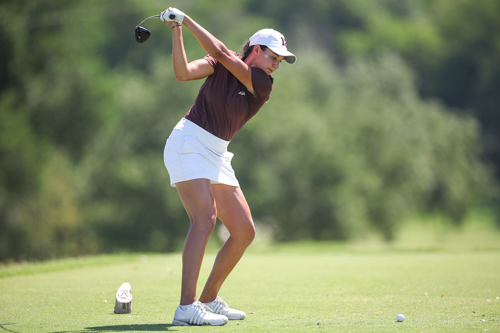
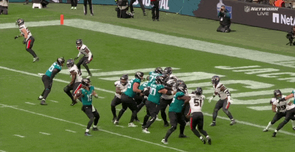

| ||||
| ||||
 | ||||
01 / THE BIG 3 · FOOTBALL All Aggies. |
| TEXAS A&M 41 | — | THE CITADEL 0 |
Morrow ran for three scores. Gregory caught two. The Aggies took care of business at Kyle.
| Inside the shutout → |
| 501 TOTAL YARDS | 2 2026 SHUTOUTS | 4–3 RECORD |
02 / THE BIG 3 · VOLLEYBALL
That’s how you
answer back.

Senior Day. Four Aggies in double-digit kills. A 3–1 win over Auburn.
| 21 STOWERS KILLS |
03 / THE BIG 3 · GOLF
Two teams.
Time to tee it up.
Both golf teams begin 54-hole events today.
 |  |
THE BEST THING WE SAW
First NFL touchdown.
One hand. Of course.

Nate Boerkircher made his first trip to an NFL end zone one to remember.
| Watch the catch → |

THE RUNDOWN
Four more.
All caught up.
SOCCER LSU 4 · A&M 3Churchill scored twice. A late penalty decided it. Soccer recap → |
VOLLEYBALL FLORIDA 3 · A&M 1Stowers had 17 kills and 11 digs Friday. Florida recap → |
CROSS COUNTRY MOIBEN FINISHES SECONDA season debut to build on at Arturo Barrios. Meet recap → |
BASEBALL A&M 13 · MCNEESE 10Fall ball ends with 22 Aggie strikeouts. Fall finale recap → |
 | DUGOUT CLUB 2027 Closer to |
| Explore membership → |
Memberships from $1,000.
NEXT UP
Circle these.
| THU 22 | Soccer at Missouri 8:00 PM · SEC Network |
| FRI 23 | Volleyball at Georgia 6:00 PM · SEC Network |
| SAT 24 | Football at No. 13 Alabama 2:30 PM · ABC |
| See the full athletics calendar → |
| ALWAYS AGGIE. ALWAYS TOGETHER. |
Texas A&M Athletics
756 Houston Street · College Station, TX 77843
(888) 992-4443
To manage which communications you would like to receive, or to unsubscribe, please click here.
Please note that by unsubscribing you are opting out of ALL email communications from Texas A&M Athletics. To stop receiving the Aggie AM, click here, and uncheck the Aggie AM box.